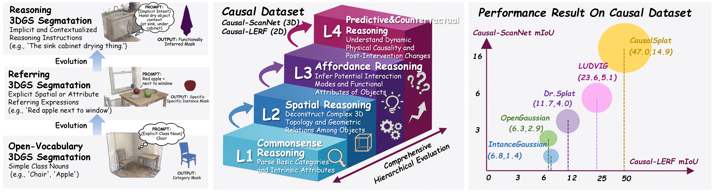
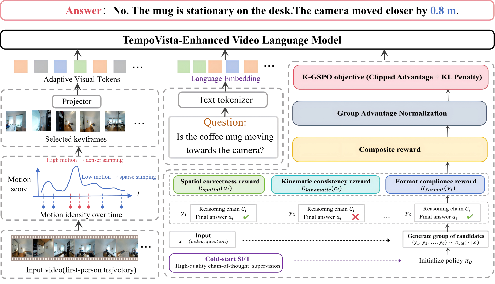
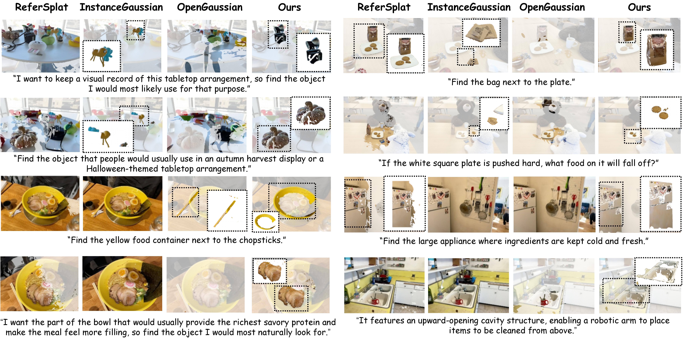
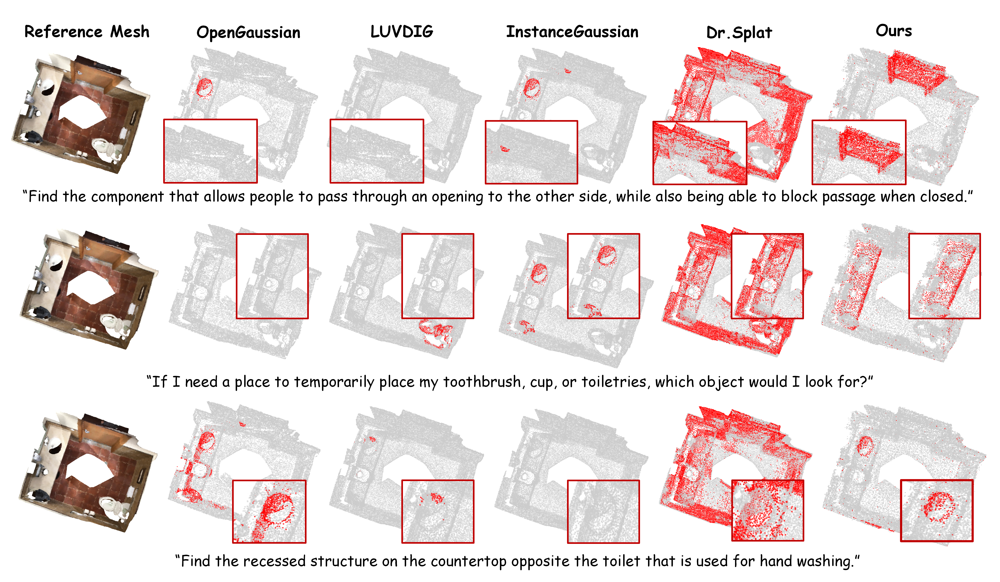
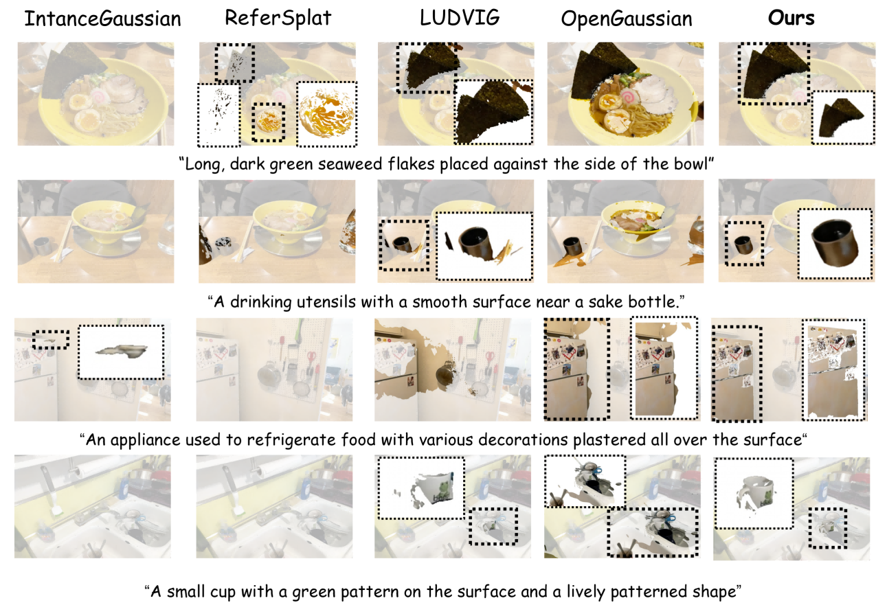
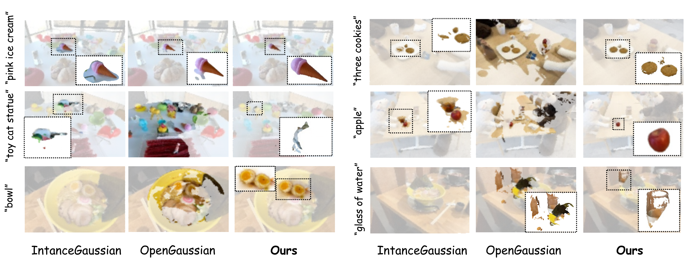

Accepted to ACM MM 2026

Overview of our reasoning segmentation paradigm and benchmark. Left: Evolution from open-vocabulary and referring segmentation to complex reasoning driven by implicit intents. Middle: Four progressive reasoning levels — commonsense, spatial, affordance, and predictive/counterfactual. Right: CausalSplat significantly outperforms SOTA on 2D/3D metrics within Causal-LERF and Causal-ScanNet.
While 3D Gaussian Splatting (3DGS) has advanced open-vocabulary scene understanding, existing methods remain confined to explicit queries. They struggle to interpret implicit intents, complex spatial constraints, and commonsense reasoning required for practical embodied interactions.
To address this gap, we introduce the task of Reasoning 3D Gaussian Segmentation and construct two benchmarks, Causal-LERF and Causal-ScanNet. These benchmarks systematically evaluate commonsense, spatial, affordance, and counterfactual reasoning. Evaluations reveal that current state-of-the-art methods perform poorly on these reasoning challenges.
We propose CausalSplat, a framework that integrates vision-language models with 3D semantic scene graphs to disentangle explicit structural perception from implicit logical inference. Extensive experiments demonstrate state-of-the-art performance on our reasoning benchmarks while showing strong generalizability on standard referring and open-vocabulary 3D segmentation tasks.
Parses absolute and relative geometric relations and 3D topologies such as support, containment, and occlusion. Example: “Find the object occluded under the table that supports a box.”
Aligns LLM prior knowledge with 3D scene instances to interpret implicit semantics. Example: “I just finished a greasy meal and need to clean my mouth.” → locate a napkin by function, not appearance.
Infers whether an object supports embodied actions based on 3D geometry and spatial state. Example: “Find a container with an upward opening for a robotic arm to grasp.”
Models dynamic physical changes and causal relations under hypothetical conditions. Example: “If the bottom red object is removed, which objects will fall?”
Causal-LERF and Causal-ScanNet contain 231 reasoning instructions across 14 real indoor scenes, with distribution: 18.2% spatial, 48.5% commonsense, 16.0% affordance, and 17.3% predictive/counterfactual reasoning.

Overview of the proposed CausalSplat pipeline. (a) Semantic Field Construction: SAM masks, spatially weighted features, contrastive optimization, and 3D instance assignment. (b) Semantic Scene Graph Construction & Reasoning: Multimodal nodes and scale-adaptive edges, with a three-stage VLM reasoning pipeline.
CausalSplat separates explicit structural perception from implicit logical inference. Scene graphs model topological and spatial relations among 3D entities, while a VLM parses implicit queries through instruction parsing, topological reasoning, and decision output.
| Dataset | Task Type | Domain | Scenes | Query Scale | Spa. | Com. | Aff. | Cou. |
|---|---|---|---|---|---|---|---|---|
| LERF | Open-Vocab Seg. | 2D | 4 | 208 Words | — | — | — | — |
| ScanNet (OVS) | Open-Vocab Seg. | 3D | 10 | 84 Words | — | — | — | — |
| Ref-LERF | Ref. Seg. | 2D | 4 | 63 Inst. | ✓ | — | — | — |
| 3DAffordSplat | Reasoning Seg. | 3D Synthetic | 8.3K | 6.6K Inst. | — | — | ✓ | — |
| REALM3D | Reasoning Seg. | 2D | 100+ | 1K+ Pairs | ✓ | ✓ | — | — |
| Causal-LERF (Ours) | Reasoning Seg. | 2D | 4 | 158 Inst. | ✓ | ✓ | ✓ | ✓ |
| Causal-ScanNet (Ours) | Reasoning Seg. | 3D | 10 | 73 Inst. | ✓ | ✓ | ✓ | ✓ |
Spa. = Spatial, Com. = Commonsense, Aff. = Affordance, Cou. = Counterfactual reasoning. Causal-LERF and Causal-ScanNet are the first multi-level reasoning benchmarks for 3DGS covering all four dimensions.
Causal-ScanNet.zip and Causal-LERF.zip):
https://pan.baidu.com/s/1CYvW3THVod7JYKHf6cewRg?pwd=9tyw
2D mIoU (%) on Causal-LERF for Reasoning 3D Gaussian Segmentation. Models must localize and segment targets from natural language queries with implicit intents and multi-hop logical constraints.
| Method | Ramen (%) | Teatime (%) | Figurines (%) | Waldo (%) | Mean (%) |
|---|---|---|---|---|---|
| Open-Vocabulary & Referring Methods | |||||
| OpenGaussian | 9.6 | 4.2 | 3.3 | 8.2 | 6.3 |
| Dr.Splat | 8.7 | 8.8 | 16.1 | 13.3 | 11.7 |
| InstanceGaussian | 2.7 | 4.7 | 9.2 | 10.5 | 6.8 |
| LUDVIG | 32.6 | 19.7 | 34.1 | 8.0 | 23.6 |
| ReferSplat | 5.2 | 16.2 | 7.5 | 11.1 | 10.0 |
| REALM | 9.4 | 14.3 | 7.8 | 13.9 | 11.4 |
| Reasoning Segmentation (Ours) | |||||
| CausalSplat (Ours) | 26.2 | 68.4 | 46.9 | 46.5 | 47.0 |
3D mIoU (%) on Causal-ScanNet for point-level reasoning segmentation in large-scale indoor scenes.
| Method | 3D mIoU (%) |
|---|---|
| OpenGaussian | 2.9 |
| InstanceGaussian | 1.4 |
| Dr.Splat | 4.0 |
| LUDVIG | 5.1 |
| CausalSplat (Ours) | 14.9 |
Average 2D mIoU (%) on Causal-LERF by reasoning dimension.
| Reasoning Dimension | OpenGaussian | Dr.Splat | InstanceGaussian | LUDVIG | ReferSplat | CausalSplat |
|---|---|---|---|---|---|---|
| Spatial Reasoning | 2.5 | 14.4 | 5.9 | 23.4 | 14.5 | 58.9 |
| Commonsense Reasoning | 4.1 | 13.7 | 8.3 | 28.1 | 8.1 | 42.9 |
| Affordance Reasoning | 3.2 | 9.9 | 2.9 | 34.3 | 7.3 | 49.5 |
| Predictive & Counterfactual | 1.8 | 5.6 | 2.1 | 10.8 | 16.0 | 50.6 |

Qualitative comparison on the Causal-LERF dataset. CausalSplat accurately segments targets described by implicit intents and multi-hop spatial constraints, while baselines often over-segment or localize distractors.

Qualitative comparison on the Causal-ScanNet dataset. Our method handles complex spatial geometries and semantic ambiguities in large-scale point clouds.
| Method | Ramen | Teatime | Figurines | Waldo | Mean |
|---|---|---|---|---|---|
| Grounded SAM | 14.1 | 16.9 | 16.0 | 16.2 | 15.8 |
| LangSplat | 12.0 | 7.6 | 17.9 | 17.9 | 13.9 |
| SPIn-NeRF | 7.3 | 11.7 | 9.7 | 10.3 | 9.8 |
| GS-Grouping | 27.9 | 14.8 | 8.6 | 6.3 | 14.4 |
| GOI | 27.1 | 22.9 | 16.5 | 15.7 | 20.5 |
| ReferSplat | 35.2 | 31.3 | 25.7 | 24.4 | 29.2 |
| CausalSplat (Ours) | 28.2 | 38.0 | 50.6 | 27.7 | 36.1 |

| Method | Ramen | Teatime | Figurines | Waldo | Mean |
|---|---|---|---|---|---|
| Pixel-based | |||||
| LangSplat | 51.2 | 65.1 | 44.7 | 44.5 | 51.4 |
| 3DVLGS | 61.4 | 73.5 | 58.1 | 54.8 | 62.0 |
| Point-based | |||||
| OpenGaussian | 31.0 | 60.4 | 39.3 | 22.7 | 38.4 |
| LUDVIG | 42.3 | 58.6 | 58.0 | 42.8 | 50.4 |
| CausalSplat (Ours) | 26.7 | 73.0 | 75.3 | 30.1 | 51.3 |

@inproceedings{ding2026causalsplat,
title={CausalSplat: Towards Comprehensive Hierarchical Reasoning in 3D Gaussian Splatting},
author={Jiayu Ding and Meilu Song and Yun Chen and Wei Gao and Ge Li},
booktitle={Proceedings of the ACM International Conference on Multimedia},
year={2026}
}